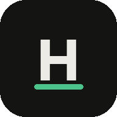

Alerts and dashboard
iPhone only delivers notifications to web apps opened from the Home Screen.
Use Safari on iPhone with iOS 16.4 or later, then add Mu to your Home Screen.
Margin warnings, a stopped bot, trades and the daily summary arrive as notifications. They're encrypted on your PC and only this phone can read them.
Open iPhone Settings → Notifications → Mu (or HFAM if it was added before the rename) and allow notifications, then reopen this app.
Send this code to your PC (for example by email to yourself), then on the PC run python hfam_push.py --pair and paste it. You'll get a test notification.
Alerts and the dashboard come from the Mu watchdog on your PC (dashboard every 15 min).
If the PC is off, nothing updates. The dashboard is encrypted; only this phone holds its key.